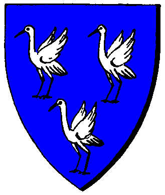

| Übersicht,
Anschläge und Stammtisch (RPG) |
|
Ramius
|
Otin ni Shim
  |
*Eine junge Elfe kommt an das Anschlagbrett. Anhand ihrer Kleidung ist sie eindeutig als Turapriesterin erkennbar. Mit einem Taschentuch wischt sie sich die Tränen ab. Mit zitternden Händen pinnt sie ein Pergament an das Brett.*
Als Erbin von Ramius, dem dritten Fürsten des schwarzen Drachen, fällt mir die schwere Aufgabe zu, den Tod meines geliebten Lehnsherren bekannt zu geben.
Mit dem Gedächtnisverlust seiner Geliebten Caranethiriel von Hexenhain und ihrem baldigen Tod verlor er sehr an Lebenslust. Er zog sich fortan immer mehr aus dem öffentlichen Leben und zu guter letzte auch immer mehr von seinen Freunden zurück.
Zur 22. Stunde am 40. Blumenmond 425 hatten die Götter endlich ein Einsehen mit ihm und schickten einen Drachen um ihn in Turas Reich zu eskortieren, wo er von nun an mit seiner Liebsten im ewigen Glück vereint ist.
*Die Elfe legt noch eine rote Rose nieder und entfernt sich dann eilends*
Otin ni Shim,
Netre ni î Cirolur
Zur 21. Stunde am 41.Blumenmond im Jahre 425 |
09.07.06 19:27
 |
|
Artor Draconigena
 |
Ein langes, ereignisreiches Leben hat er gelebt.
Er war ein Treuer Diener der Drachen,seinen Leuten ein guter Anführer und treuer Lehensmann.
Sein Wissen gar unerschöpflich, wenn auch er im Alter etwas wunderlich wurde.
Wir werden dich vermissen alter Mann aber sicher nicht vergessen.
Möge der Drache dich schützen und dir den rechten Weg weisen.
Für das Staatsgebiet der Schatten von Scinibe verfüge ich eine Staatstrauer von 3 Tagen ab dem morgigen Sonnenaufgang am 42. Blumenmond im Jahre 425
gez.
Markgraf Artor Draconigena,
Vorsteher von Bor Col Somar,
Anführer der glorreichen Nation "Schatten von Scinibe",
Henen Bor Gimu
Zur 13. Stunde am 42.Blumenmond im Jahre 425 |
09.07.06 23:00
|
|
Laurin
  |
Einst war er mein Feind, doch dies ist lange her. Möge er den Weg in eine bessere Welt finden.
Sir Laurin,
Vorsteher von Gloria Bellum Gallicum,
Kardinal im Dienste des einzig wahren Glaubens an Urvan,
Minister für Inselschutz,
Kriegsbeildiplomat des Volks von Lothien
Zur 15. Stunde am 42.Blumenmond im Jahre 425 |
09.07.06 23:36
|
|
| Biba Butzemann (RIP) |
Ein Sklavenhalter, Feind und vermutlicher Paktierer weniger.... * schreibt es, grinst und geht von dannen*
Baron Thor von Asgard,
Vorsteher von UrkS diFugL aka UmF d FuduraB,
Knuffiger Wächter der Finsternis
Zur 15. Stunde am 42.Blumenmond im Jahre 425 |
09.07.06 23:37
|
|
Aahz
  |
Adios Ramius
Freiherr Aahz,
Vorsteher von Kleinwichtel-Walhallingen
Zur 16. Stunde am 42.Blumenmond im Jahre 425 |
09.07.06 23:41
|
|
| Kassandra Alfiriel (RIP) |
wenn man nichts gescheites zu sagen hat *murmelt sie als sie thors kommentar liest, etwas lauter äußert sie sodann* Mein aufrichtiges Beileid, Ramius war lange Zeit ein hochgeschätztes Mitglied des Pheronkonvents ich werde ihn stets in guter Erinnerung behalten.
Freifrau Kassandra Alfiriel,
Ehefrau des ehrenwerten Cronic Alfiriel
Zur 17. Stunde am 43.Blumenmond im Jahre 425 |
10.07.06 5:42
|
|
| Marlandi in Marcovil (RIP) |
*am Fenster seines Ratszimmers steht, eine schwarze Lilie in der Hand hält und Richtung Bor Col Nan blickt*
Baron Marlandi,
Vorsteher von Bor Col Cros,
Meravnan, Merda nime ilek
Zur 21. Stunde am 43.Blumenmond im Jahre 425 |
10.07.06 6:32
|
|
| Itto Ogami (RIP) |
Mein Beileid für die Hinterbliebenden, es ist nicht leicht sich von guten Freunden zu verabschieden, ich hoffe ihr schafft es.
*stimmt ein stilles Gebet ein*
Drake
Zur 23. Stunde am 43.Blumenmond im Jahre 425 |
10.07.06 7:03
|
|
| Dior e Feye (RIP) |
*Schlendert am Anschlagsbrett vorbei*
Hmmh, Ramius......Ramius.... War das nicht der, der die Sklaven in seiner Pumpe hatte?
Mögen ihm trotz allem die Lichtsieben seine Sünden verzeihen, und Tura ihn in ihre gnädigen Arme aufnehmen.
*Spricht ein leises Gebet*
Auf dass diese Seele nicht den Absieben anheim fällt.
Dior e Feye,
Kardinal im Dienste des einzig wahren Glaubens an Pheron,
Ehemann der reizenden Dinah e Feye
Zur 1. Stunde am 44.Blumenmond im Jahre 425 |
10.07.06 7:30
|
|
| Rollblack (RIP) |
Darf doch net wahr sein - Stirb der Doof einfach so - ohne mir aufwiedersehen zu sagen...
schande über seinen kleinen karlen Kopf ...
*snüff*
Fürst Rollblack,
Vorsteher von Honor fá Lúhn,
Ehemann des ehrenwerten thanatos béliar
Zur 2. Stunde am 44.Blumenmond im Jahre 425 |
10.07.06 7:49
|
|
| Williams Horlus (RIP) |
*kommt etwas nachdenklich zum Anschlagsbrett*
Ich hatte dich schätzen gelernt im Pheronkovent, durch deine Reden die du immer verlass. Sie verbreitet immer viel Wissen und es gab viele Leute die durch dein werken sich intensiver mit Pheron beschätztig haben. Du warst ein sehr geschätzer Bruder von unserem Konvent.
Nachdems du den Konvent verlassen hattest um dich mehr um Politische Sachen zu kümmern, haben sich unsere Wege getrennt. Was vorgefallen ist, bedauere ich sehr und kann ich auch nicht verstehen.
Ich werde nur deine Reden im Herzen behalten die du als gläubiger Pheroner verlass.
Ich hoffe Tura hat dich doch in Ihr Reich aufgenommen.
Freiherr Williams Horlus,
Vorsteher von Grenzfeste Morodshall,
Hohepriester im Dienste des einzig wahren Glaubens an Pheron,
Vertretender Verkünder im Dienste des Pheron-Konventes,
Befehlshaber der Legion Pherons,
Verlobter der reizenden Grundy,
Legionär Pherons
Zur 7. Stunde am 46.Blumenmond im Jahre 425 |
10.07.06 20:12
|
|
| Roxane (RIP) |
*Ein kleines Lüftchen weht einen Zettel zum Anschlagsbrett. Auf ihm steht in sauberer Schrift:*
Das Leben...nur ein Hauch...nur ein Zittern der Zeit.
*Als der Wind den Zettel weiterweht, kann man auf der Rückseite ein Kreuz und eine Rose erkennen. Der Zettel bleibt unweit vom Anschlagsbrett liegen*
Roxane
Zur 21. Stunde am 48.Blumenmond im Jahre 425 |
11.07.06 10:44
|
|
| Athândira Anúldor (RIP) |
Ein kurzer Glanz in Deinem Lächeln - ein Augenblick.
Zu kurz um alles auszusprechen und Worte geben nichts zurück.
"Der Drache wird auf dich Warten, bis du eines Tages kommst zurück" das waren deine letzten Worte. Doch nun kann ich die Sterne sehen, der Himmel scheint zu brennen. Es ist als ob ich durchs Feuer ginge und die Glut mich nicht verbrennt. Es ist Kalt in mir, ich werde dich vermissen mein Freund.
Navaer Ramius!
Baronesse Athândira Anúldor,
Vorsteherin von Dîn Pelthaés
Zur 3. Stunde am 71.Blumenmond im Jahre 425 |
16.07.06 14:33
|
|
Slam ODR
  |
Früher ein Feind, jetzt schade um ihn.
Machs gut!
Slam ODR,
Hohepriester im Dienste des einzig wahren Glaubens an Pheron
Zur 1. Stunde am 75.Blumenmond im Jahre 425 |
17.07.06 12:33
|
|
Kantar
 |
Doch welch Irnonie des schicksals seine Karawane zog die Tage noch umher..
Baron Kantar,
Vorsteher von Kathargo,
Anführer der glorreichen Nation "Händler der Freiheit",
Witwer von Pebrilia Celil-Galdor
Zur 6. Stunde am 83.Blumenmond im Jahre 425 |
19.07.06 10:44
|
|
Übersicht,
Anschläge und Stammtisch (RPG)
|